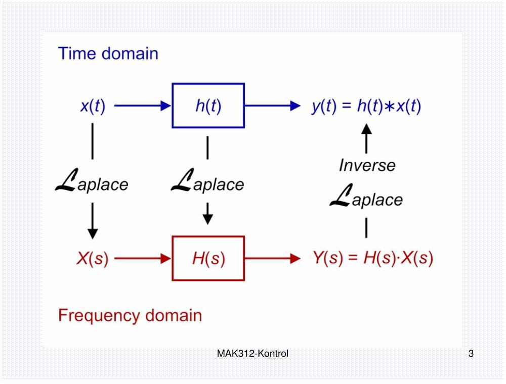
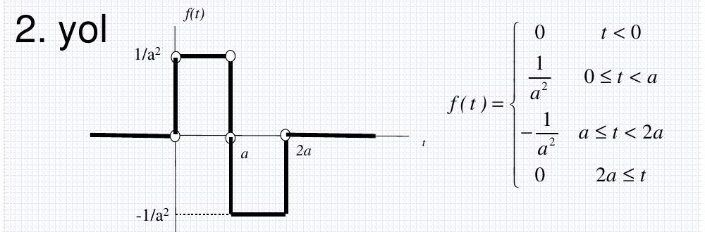

· EEM322
EEM322 Control Systems: Laplace Transform Presentation (MAK312 System Dynamics and Control, 2007–2008 Fall)
EEM322 – Denetim Sistemleri · 05.03.2008 · 16.10.2026
This post is a third-party presentation stored in the "eem322_kontrol_alper_siteden" subfolder of the EEM322 Control Systems folder: the "Laplace Transform" slides of the MAK312 System Dynamics and Control course, 2007–2008 Fall semester. Judging by the folder name, it was downloaded from a website; the presentation does not name the instructor or the university. The PDF has 31 pages (62 slides) with two slides per page and is dated 5 March 2008. The slide text and formulas are transcribed below as text; the original PDF can be downloaded at the end of the post.
This content belongs to a third-party source; it is shared for archival and nostalgic purposes with the source credited. It will be removed at the request of the rights holder.
Laplace transform
One of the most important tools for modeling and analyzing linear systems is the Laplace transform. Its power lies in converting linear differential equations into algebraic equations; since it is used heavily in system dynamics courses, it is the first topic that should be studied.

The Laplace transform of a function f(t) is found by multiplying f(t) by e^(−st) and integrating from t = 0 to ∞. The result is a function of the complex Laplace variable s:
F(s) = L[f(t)] = ∫₀^∞ f(t)·e^(−st) dt
Linearity: L[a·f(t) + b·g(t)] = a·F(s) + b·G(s).
Transforms of basic functions
| Function | f(t) (t ≥ 0) | F(s) |
|---|---|---|
| Exponential | A·e^(−αt) | A/(s + α) (s > −α) |
| Unit step | h(t) = 1(t) | 1/s |
| Shifted unit step | 1(t − t₀) | e^(−st₀)/s |
| Ramp | a·t | a/s² |
| Sine | A·sin(ωt) | Aω/(s² + ω²) |
| Cosine | A·cos(ωt) | As/(s² + ω²) |
| Pulse, height A/t₀, duration t₀ | (A/t₀)[1(t) − 1(t − t₀)] | (A/(s·t₀))(1 − e^(−st₀)) |
| Impulse | A·δ(t) | A |
- Ramp: the integral is solved by integration by parts (∫u dv = uv − ∫v du, u = t, dv = e^(−st)dt, v = −e^(−st)/s): L[a·t] = a·∫₀^∞ e^(−st)dt/s = a/s².
- Sine: writing sin(ωt) = (e^(iωt) − e^(−iωt))/(2i) gives L = (A/2i)[1/(s − iω) − 1/(s + iω)] = Aω/(s² + ω²); the cosine is found similarly.
- Impulse: take the limit t₀ → 0 in the pulse function; the 0/0 indeterminate form is resolved with L'Hôpital's rule: lim A(1 − e^(−st₀))/(st₀) = As/s = A. If the area underneath is 1, it is called the unit impulse (Dirac delta). The unit impulse at t = t₀, δ(t − t₀), is 0 for t ≠ t₀, ∞ at t = t₀, and ∫δ(t − t₀)dt = 1. The unit impulse is the derivative of the unit step; the unit step is likewise the integral of the unit impulse.
Computing integrals as in these examples is not always practical; instead, prepared Laplace transform tables are used.
Transform rules
- Shifting in the time axis: for a > 0, L[f(t − a)] = e^(−as)·F(s). (Proof: change of variable τ = t − a; time-dependent functions are taken to be zero for t < 0.)
- Multiplication by e^(−αt): L[e^(−αt)·f(t)] = F(s + α). Example: L[sin ωt] = ω/(s² + ω²) ⇒ L[e^(−αt) sin ωt] = ω/((s + α)² + ω²).
- Derivatives: L[df/dt] = sF(s) − f(0); L[d²f/dt²] = s²F(s) − s·f(0) − ḟ(0); in general L[f⁽ⁿ⁾(t)] = sⁿF(s) − s^(n−1)f(0) − s^(n−2)ḟ(0) − … − f⁽ⁿ⁻¹⁾(0).
- Example: for g(t) = sin ωt, L[ġ(t)]: method I, ġ = ω cos ωt ⇒ sω/(s² + ω²); method II, s·ω/(s² + ω²) − g(0) = sω/(s² + ω²).
- Integral: L[∫f(t)dt] = F(s)/s + f⁻¹(0)/s, where f⁻¹(0) = (∫f(t)dt) at t = 0; for a definite integral, L[∫₀ᵗ f(t)dt] = F(s)/s.
- Complex differentiation theorem: L[t·f(t)] = −dF(s)/ds, L[t²f(t)] = d²F(s)/ds², L[tⁿf(t)] = (−1)ⁿ dⁿF(s)/dsⁿ.
- Convolution: f₁(t)∗f₂(t) = ∫₀ᵗ f₁(t − τ)f₂(τ)dτ = f₂(t)∗f₁(t) and L[f₁∗f₂] = F₁(s)·F₂(s).
- Product of two functions: L[f(t)·g(t)] = (1/2πj)∫_(c−j∞)^(c+j∞) F(ρ)G(s − ρ)dρ.
Note: In the slide, the derivatives in the complex differentiation theorem are written with d/dt; since F(s) is a function of s, the derivative is with respect to s (d/ds).
Final value and initial value theorems
The final value theorem gives the steady-state behavior of a function and is valid only if lim(t→∞) f(t) exists. If all poles of sF(s) lie in the left half of the s-plane, f(t) settles to a bounded value. If the poles are on the imaginary axis or in the right half-plane, f(t) oscillates or grows exponentially and the limit does not exist; for example, for f(t) = sin ωt, F(s) = ω/(s² + ω²), the poles are s = ∓jω, and the final value theorem cannot be applied.
Theorem: If the Laplace transforms of f(t) and df/dt exist and lim(t→∞) f(t) exists, then lim(t→∞) f(t) = lim(s→0) sF(s).
Proof: taking the limit s → 0 in the derivative rule gives lim ∫₀^∞ (df/dt)e^(−st)dt = lim[sF(s) − f(0)]; since e^(−st) → 1, the left side becomes ∫₀^∞ (df/dt)dt = lim f(t) − f(0), and the result follows from the two equalities.
Example: F(s) = 1/(s(s + 1)). sF(s) = 1/(s + 1); the pole s = −1 is in the left half-plane, so the limit exists: lim f(t) = lim(s→0) 1/(s + 1) = 1.
Initial value theorem: f(0+) = lim(s→∞) sF(s) (its proof is left as homework).
Example: doublet pulse and the limit a → 0

f(t) is written as a sum of steps: f(t) = (1/a²)1(t) − (2/a²)1(t − a) + (1/a²)1(t − 2a). Thus
F(s) = (1/(a²s))·(1 − 2e^(−as) + e^(−2as))
The same result is also found by integration (method 2). The limit a → 0 is a 0/0 indeterminate form; applying L'Hôpital's rule twice gives lim F(s) = −s + 2s = s (the transform of the derivative of the unit impulse, i.e., the unit doublet).
Periodic functions
For an f(t) with period T,
L[f(t)] = (1/(1 − e^(−Ts)))·∫₀ᵀ f(t)e^(−st)dt
Proof: the integral is split into periods, τ = t − nT gives Σ e^(−nTs)·∫₀ᵀ f(τ)e^(−sτ)dτ, and the geometric series Σ e^(−nTs) = 1/(1 − e^(−Ts)) is used.
Example: for a square wave that is +1 over 0–T/2 and −1 over T/2–T,
L[f(t)] = (1/(1 − e^(−Ts)))·(1/s)·(1 − e^(−sT/2))² = (1/s)·(1 − e^(−sT/2))/(1 + e^(−sT/2))
Inverse Laplace transform and partial fractions
L⁻¹[F(s)] = f(t) = (1/2πj)∫_(c−j∞)^(c+j∞) F(s)e^(st) ds
Here the constant c is chosen greater than all poles of F(s). This integral is very rarely used; instead, F(s) is decomposed into components whose transforms are known, and each is inverse transformed separately: F(s) = F₁(s) + … + Fₙ(s) ⇒ f(t) = f₁(t) + … + fₙ(t).
Note: In the slide, the exponential term in the inverse transform integral is written as e^(−sτ); the correct form is e^(st).
Partial fraction expansion: F(s) = B(s)/A(s) must be a proper fraction, i.e., deg A(s) > deg B(s). If not, division is performed first: (s + 1)/s = 1 + 1/s.
(i) Distinct poles
F(s) = K(s + z₁)…(s + z_m)/[(s + p₁)…(s + p_n)] = a₁/(s + p₁) + a₂/(s + p₂) + … + aₙ/(s + pₙ), m < n
The constants a_k are called residues. Multiplying both sides of the equality by (s + p_k) and setting s = −p_k gives a_k = [(s + p_k)F(s)] (s = −p_k). Using L⁻¹[a_k/(s + p_k)] = a_k·e^(−p_k t), we obtain f(t) = a₁e^(−p₁t) + a₂e^(−p₂t) + … + aₙe^(−pₙt).
Exercises: F(s) = 4(s + 1)(s + 2)/[s(s + 1)(s + 2)]; F(s) = (s⁴ + 3s² + 5s + 1)/[s(s + 1)(s + 2)]; F(s) = (s + 4)/(s² + s + 1).
(ii) Repeated poles
F(s) = (s² + 2s + 3)/(s + 1)³ = b₁/(s + 1) + b₂/(s + 1)² + b₃/(s + 1)³. Multiplying both sides by (s + 1)³ gives (s + 1)³F(s) = (s + 1)²b₁ + (s + 1)b₂ + b₃:
- At s = −1: b₃ = (s² + 2s + 3) = 2
- First derivative at s = −1: b₂ = (2s + 2) = 0
- Second derivative at s = −1: 2b₁ = 2 ⇒ b₁ = 1
F(s) = 1/(s + 1) + 2/(s + 1)³, L⁻¹[1/(s + a)ⁿ] = tⁿ⁻¹e^(−at)/(n − 1)! f(t) = e^(−t) + 2·t²e^(−t)/2! = e^(−t)(1 + t²)
Partial fractions with MATLAB
For F(s) = B(s)/A(s) = (b(1)s^m + … + b(m))/(a(1)s^n + … + a(n)), with coefficient vectors num and den, [r,p,k] = residue(num,den) returns the residues (r), poles (p), and the direct term (k). Example:
num = [1 -8 17 -6 -2];
den = [1 -10 31 -30];
[r,p,k] = residue(num,den)
% r = 3, 1, 2 p = 5, 3, 2 k = 1 2
[num,den] = residue([3 1 2],[5 3 2],[1 2]) % reverse direction: from fractions to polynomialsF(s) = (s⁴ − 8s³ + 17s² − 6s − 2)/(s³ − 10s² + 31s − 30) = s + 2 + 3/(s − 5) + 1/(s − 3) + 2/(s − 2)
Note: In the slide the result is written as "3/(s + 5) + 1/(s + 3) + 2/(s + 2)"; the poles in the MATLAB screenshot are p = 5, 3, 2, and the denominator factors as (s − 2)(s − 3)(s − 5), so the denominators should be s − 5, s − 3, s − 2.
Solving linear time-invariant differential equations
Two steps are followed: (1) the Laplace transform of each term of the differential equation is taken, giving an algebraic equation in s, and the dependent variable X(s) is isolated; (2) the inverse Laplace transform is applied to X(s) to obtain the time function. The transforms of the derivatives are:
L[x(t)] = X(s), L[ẋ(t)] = sX(s) − x(0), L[ẍ(t)] = s²X(s) − s·x(0) − ẋ(0) L[x⁽ⁿ⁾(t)] = sⁿX(s) − Σ(k=1…n) s^(n−k)·x⁽ᵏ⁻¹⁾(0)
Exercises:
- Example 4: y⃛ + 6ÿ + 11ẏ + 6y = 2t, y(0) = ẏ(0) = ÿ(0) = 0
- Example 5: ẍ + 2ẋ + 5x = 1, x(0) = 0, ẋ(0) = 2